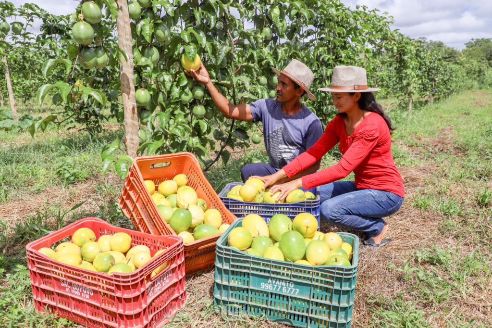
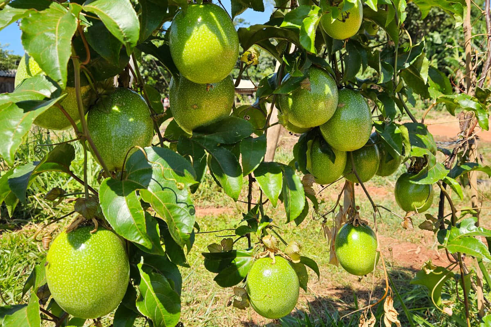
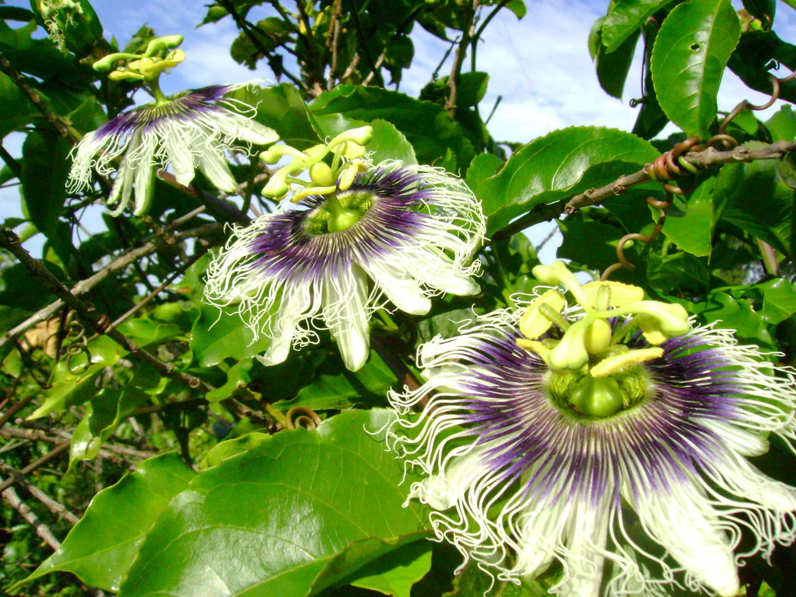

<!DOCTYPE  html>
<!--começo HTML-->
<html>
<!--Colar aqui as informações do site-->
<body>
<!--Colar/digitar  aqui as seções-->

<!--Colar/digitar  a referência ao arquivo JavaScript-->
</body>
</html>
<!--fim HTML-->
<!--começo das informações internas do site-->
<head>
    <title>Do campo à cidade, colhendo oportunidades</title>
    <meta  charset="UTF-8" />
    <meta  name="viewport"  content="width=device-width, initial-scale=1" />
    <link  rel="stylesheet"  href="stilo.css" />
    <link  rel="preconnect"  href="https://fonts.googleapis.com" />
    <link  rel="preconnect"  href="https://fonts.gstatic.com"  crossorigin />
    <link href="https://fonts.googleapis.com/css2?family=Lustria&display=swap" rel="stylesheet"/>
    </head>
    <!--fim das informações internas do site-->
    <!--começo cabeçalho visual do site-->
<header>
	<div  class="cabecalho img">
		
		<h1  class="texto__cabecalho">
			Manejo do Maracujá.
		</h1>
		<a  class="cabecalho__botao"  href="https://www.nre.seed.pr.gov.br/modules/conteudo/conteudo.php?conteudo=53" target="_blank" >NRE IVAIPORÃ</a>
			<br />
	</div>
</header>
<!-- fim cabeçalho visual do site-->
<!-- primeira seção -->
<section  class="container">
	<div  class="secao1__descricao">
		<p  class="secao1__titulo">O que é maracujá?</p>
		<p  class="secao1__texto">
		
		</p>Maracujá é um fruto produzido pelas plantas do gênero Passiflora. Pertencente à família Passifloraceae, o maracujazeiro é originário da América Tropical e possui mais de 150 espécies. As espécies mais cultivadas são maracujá-amarelo, maracujá-roxo e o maracujá-doce.
	</div>
	
</section>
<!-- fim da primeira seção -->
<!-- segunda seção -->
<section>
	<div  class="secao2__titulo">
		<p  class="secao2__img__titulo">A produção do maracujá</p>
	</div>
	<div  class="secao2__imagens">
		<div>
			
		</div>
		<div>
			
		</div>
		<div>
			
		</div>
	</div>
	<div  class="secao2__subtitulo">
		<h2  class="secao2__img__subtitulo">
			Ajuda a controlar os níveis de colesterol e glicose e regula a pressão sanguínea. 
			Com antioxidantes como a vitamina C, flavonoides e betacaroteno, a polpa e a casca do maracujá protegem as células que produzem insulina e ajudam o organismo a absorver os carboidratos lentament
		</h2>
	</div>
</section>
<!--terceira seção informações -->
<section  class="container">
	<div  class="secao3__imagem img">
		<div  class="secao3__texto">
			<h1  class="secao3__info">
			"Descubra a doçura da natureza em cada gota de mel e a versatilidade
			dos produtos da colmeia. Experimente a pureza e os benefícios dos
			nossos produtos apícolas!"
			</h1>
				<p  class="secao3__info">LuzIA -02-04-24</p>
		</div>
	</div>
</section>
<!-- fim da terceira seção informações -->
<!-- fim da segunda -->
<!-- quarta seção contato -->
<section  class="container secao4">
	<div  class="secao4__imagem">
		
	</div>
	<div  class="secao4__container">
		<p  class="secao4__titulo">Contato</p>
		<p  class="secao4__texto">Luzia</p>
			<br />
			<br />
		<p  class="secao4__email">
		<span>E-mail: </span>
		<a href="mailto:luzia.siscati@escola.pr.gov.br">luzia.siscati@escola.pr.gov.br</a>
		</p>
			<br />
		<p  class="secao4__fone"><span>Telefone: </span><a  href="tel:+554334725739">(43)3472 57-39</a></p>
			<br />
		<p  class="secao4__endereco">
		<span>Endereço: </span>Av. Minas Gerais, 295 - Ivaiporã, PR, 86870-000
		</p>
	</div>
</section>
<!-- fim quarta seção contato -->
